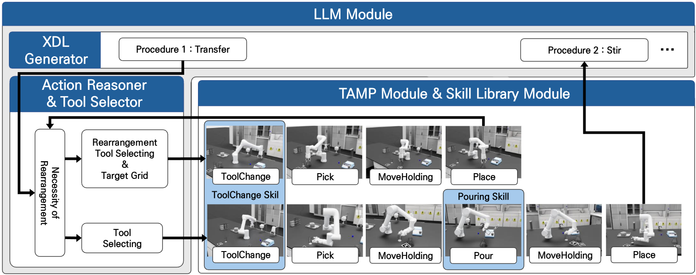

LLM-Guided Tool-Aware Task and Motion Planning for Chemistry Lab Automation
Video Summary
Abstract
Autonomous chemistry laboratories can accelerate material discovery and improve experimental reproducibility, yet current systems remain limited in two respects: existing automation pipelines rely on protocol-specific equipment that restricts adaptability to diverse, non-linear workflows, and task and motion planning on robots with limited kinematic redundancy becomes unreliable when strict orientation, collision, and workspace constraints must be satisfied at once. This paper proposes LLM-Guided Tool-Aware TAMP (Task and Motion Planning), a hierarchical framework that combines large language model (LLM)-based symbolic reasoning with GPU-accelerated motion optimization for chemistry automation. The system converts natural-language experimental instructions into validated Chemical Description Language (XDL) protocols, selects appropriate end-effectors and plans obstacle rearrangement based on execution context, estimates the scene state through multi-view fiducial marker-based perception, and produces collision-free, constraint-satisfying trajectories by evaluating thousands of candidates in parallel. A sensor-driven skill library handles execution-level actions such as tool changing and adaptive pouring. On a 6-DoF manipulator, the GPU-parallelized planner achieves a 96.7% planning success rate under orientation constraints, up from 63.3% with a CPU-based sampling baseline, with lower planning-time variance. We build a high-fidelity simulation testbed in NVIDIA Isaac Sim for randomized trials and module-level ablation studies, and results confirm that the full framework executes complete chemical sequences involving tool switching, obstacle rearrangement, and multi-step reagent manipulation. The project page is available at https://rcilab.github.io/auto_chem
Method Overview
RMRRT constructs a Riemannian barrier metric on the tangent space of the equality-constrained manifold that encodes the local geometry induced by inequality constraints. This metric is integrated into both steering and nearest-neighbor selection, enabling inequality-aware exploration while strictly maintaining equality-manifold feasibility.

(a) Equality-constrained manifold under full admissibility. (b) The same manifold with infeasible regions (holes) induced by inequality constraints. RMRRT accounts for this geometry through a Riemannian metric defined on the tangent space.

(a) Metric-induced tangent-space steering biases expansion away from inequality boundaries. (b) Riemannian nearest-neighbor selection favors nodes that admit feasible, low-cost motions toward the target.
Results
RMRRT achieves 100% success rate across all scenarios while maintaining the lowest mean planning time compared to five state-of-the-art baselines. Each scenario was evaluated over 100 trials with a 300s timeout.
| Planner | Scenario 1 | Scenario 2 | Scenario 3 | Scenario 4 | ||||
|---|---|---|---|---|---|---|---|---|
| Time (s) | Succ. | Time (s) | Succ. | Time (s) | Succ. | Time (s) | Succ. | |
| CBiRRT | 0.35 ± 0.41 | 100% | 2.97 ± 4.48 | 100% | 3.06 ± 4.27 | 100% | 74.75 ± 118.59 | 90% |
| Atlas RRT | 5.84 ± 12.63 | 100% | 48.55 ± 85.13 | 83% | 35.12 ± 69.27 | 89% | 10.02 ± 31.80 | 89% |
| TB-RRT | 5.74 ± 16.75 | 100% | 37.71 ± 86.93 | 80% | 48.83 ± 86.27 | 87% | 15.80 ± 57.35 | 84% |
| PG-RRT | 2.65 ± 6.64 | 100% | 4.49 ± 5.43 | 100% | 5.51 ± 10.41 | 100% | 32.37 ± 81.47 | 97% |
| LJCMP | 0.41 ± 1.02 | 100% | 0.24 ± 0.53 | 100% | 0.48 ± 1.56 | 100% | 0.55 ± 1.69 | 100% |
| RMRRT (ours) | 0.32 ± 0.34 | 100% | 0.18 ± 0.15 | 100% | 0.25 ± 0.26 | 100% | 0.38 ± 0.51 | 100% |
Result Video

Single-arm cabinet reaching under a fixed end-effector orientation constraint (Scenario 1).

Dual-arm constrained transfer (Scenario 2).

Dual-arm constrained transfer with a fixed orientation constraint (Scenario 3).

Triple-arm cooperative manipulation under closed-chain grasp and collision avoidance constraints (Scenario 4).

Unitree H1-2 humanoid dual-arm constrained transfer.

Cooperation with Unitree H1-2 and Roboros IGIRS-C.
BibTeX
@article{YourPaperKey2026,
title={LLM-Guided Tool-Aware Task and Motion Planning for Chemistry Lab Automation},
author={Bohyeong Pak, Hyunho Cho, Sanghyun Kim},
journal={Applied Intelligence},
year={2026},
publisher={Springer}
url={https://your-domain.com/your-project-page}
}